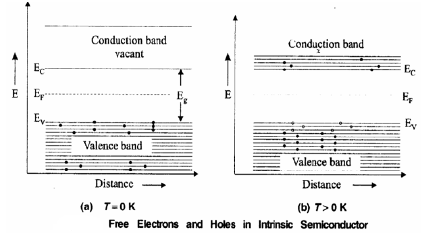
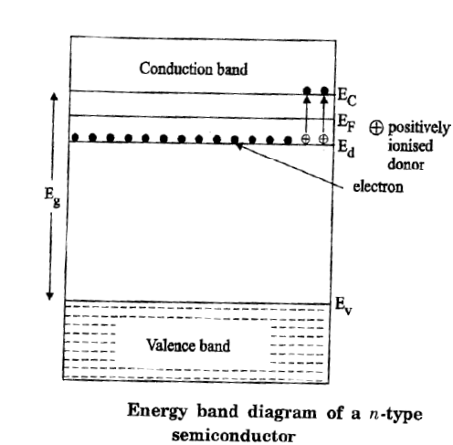
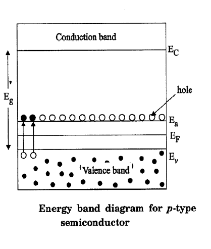
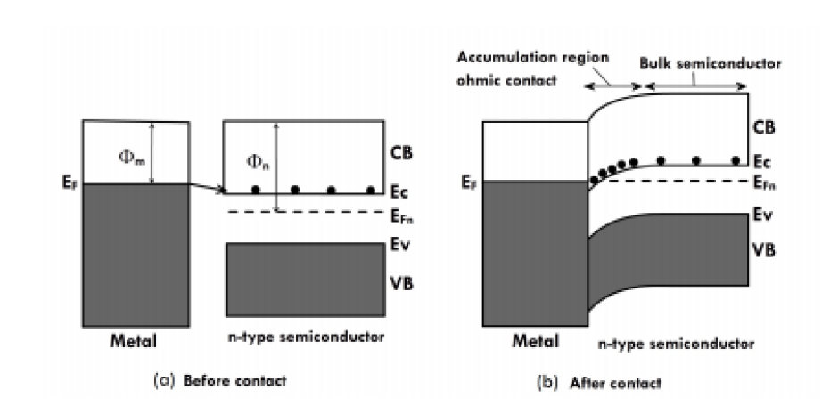

Unit 5 – Part B: SEMICONDUCTORS PHYSICS
1. Obtain an expression for carrier concentration in an intrinsic semiconductor and also calculate the intrinsic carrier concentration.
1. Carrier Concentration in Intrinsic Semiconductors
Definition: The number of electrons in the conduction band per unit volume of the material or the number of holes in the valence band of the material is known as carrier concentration. It is also known as density of charge carriers.

(A) Calculation of Density of Electrons in Conduction Band (\(n\))
Step 1: General Formula
The number of electrons (\(n\)) is calculated by integrating the product of the density of energy states \(Z(E)\) and the Fermi-Dirac probability function \(F(E)\) from the energy \(E_c\) to \(+\infty\):
$$n = \int_{E_c}^{+\infty} Z(E)F(E)dE$$
Step 2: Density of States & Probability
The density of states in the conduction band is given by:
$$Z(E)dE = \frac{4\pi}{h^3}(2m_e^*)^{3/2}(E-E_c)^{1/2}dE$$
Where \(m_e^*\) is the effective mass of the electron.
The probability of occupancy is \(F(E) = \frac{1}{1+e^{(E-E_F)/kT}}\). Since \((E-E_F)/kT\) is very large compared to 1, the term 1 in the denominator is neglected:
$$F(E) \approx e^{-(E-E_F)/kT} = e^{(E_F-E)/kT}$$
Step 3: Integration
Substituting these into the integral equation:
$$n = \frac{4\pi}{h^3}(2m_e^*)^{3/2} e^{E_F/kT} \int_{E_c}^{+\infty} (E-E_c)^{1/2} e^{-E/kT} dE$$
To solve, let \(x = E - E_c\). Then \(dE = dx\) and \(E = E_c + x\). The limits change from \(E_c \to \infty\) to \(0 \to \infty\).
$$n = \frac{4\pi}{h^3}(2m_e^*)^{3/2} e^{(E_F-E_c)/kT} \int_{0}^{+\infty} x^{1/2} e^{-x/kT} dx$$
Using the Gamma function, \(\int_{0}^{+\infty} x^{1/2} e^{-x/kT} dx = \frac{(kT)^{3/2}\pi^{1/2}}{2}\).
Step 4: Final Expression for Electron Density
Substituting the integral value back gives the expression for the concentration of electrons in the conduction band:
$$n = 2 \left( \frac{2\pi m_e^* kT}{h^2} \right)^{3/2} e^{(E_F - E_c)/kT}$$
(B) Calculation of Density of Holes in Valence Band (\(p\))
Step 1: Probability of Holes
A hole is created when an electron leaves the valence band. The probability of an unoccupied state (presence of a hole) is \(1-F(E)\).
Approximating for the valence band where \(E < E_F\):
$$1-F(E) \approx e^{(E-E_F)/kT}$$
Step 2: Density of States
The density of states in the valence band is:
$$Z(E)dE = \frac{4\pi}{h^3}(2m_h^*)^{3/2}(E_v-E)^{1/2}dE$$
Where \(m_h^*\) is the effective mass of the hole.
Step 3: Integration
Integrating from \(-\infty\) to the top of the valence band \(E_v\):
$$p = \frac{4\pi}{h^3}(2m_h^*)^{3/2} e^{-E_F/kT} \int_{-\infty}^{E_v} (E_v-E)^{1/2} e^{E/kT} dE$$
Using substitution \(x = E_v - E\), the integral is solved similarly using the Gamma function.
Step 4: Final Expression for Hole Density
This gives the expression for the concentration of holes in the valence band:
$$p = 2 \left( \frac{2\pi m_h^* kT}{h^2} \right)^{3/2} e^{(E_v - E_F)/kT}$$
2. Calculation of Intrinsic Carrier Concentration (\(n_i\))
Derivation
In an intrinsic semiconductor, the concentration of electrons equals the concentration of holes.
$$n = p = n_i$$
Therefore, \(n_i^2 = np\).
Multiplying the expressions for \(n\) and \(p\):
$$n_i^2 = \left[ 2 \left( \frac{2\pi m_e^* kT}{h^2} \right)^{3/2} e^{(E_F - E_c)/kT} \right] \times \left[ 2 \left( \frac{2\pi m_h^* kT}{h^2} \right)^{3/2} e^{(E_v - E_F)/kT} \right]$$
Simplifying the powers and exponentials (Since \(E_c - E_v = E_g\), then \(E_v - E_c = -E_g\)):
$$n_i^2 = 4 \left( \frac{2\pi kT}{h^2} \right)^3 (m_e^* m_h^*)^{3/2} e^{-E_g/kT}$$
Final Intrinsic Carrier Concentration
Taking the square root of the above equation gives the intrinsic carrier concentration \(n_i\):
$$n_i = 2 \left( \frac{2\pi kT}{h^2} \right)^{3/2} (m_e^* m_h^*)^{3/4} e^{-E_g/2kT}$$
2. Derive an expression for carrier concentration of an Extrinsic semiconductor (N–type & P-Type) and explain the variation of Fermi level with temperature.
(A) Carrier Concentration in N-Type Semiconductor

Step 1: Electron Density in Conduction Band
The density of electrons (\( n \)) in the conduction band is given by:
$$ n = 2 \left( \frac{2\pi m_e^* kT}{h^2} \right)^{3/2} e^{(E_F - E_c)/kT} \quad \dots(1) $$
Where \( E_c \) is the bottom of the conduction band and \( E_F \) is the Fermi level.
Step 2: Density of Ionized Donors
In N-type, the donor level \( E_d \) is just below the conduction band. The density of ionized donors (\( N_d^+ \)) is:
$$ N_d^+ \approx N_d e^{(E_d - E_F)/kT} \quad \dots(2) $$
(Assuming \( E_F \) lies above \( E_d \) for the approximation to hold).
Step 3: Equilibrium Condition
At equilibrium, the density of electrons in the conduction band equals the density of ionized donors:
$$ 2 \left( \frac{2\pi m_e^* kT}{h^2} \right)^{3/2} e^{(E_F - E_c)/kT} = N_d e^{(E_d - E_F)/kT} $$
Step 4: Solving for Fermi Level (\( E_F \))
Taking natural log on both sides and rearranging:
$$ \frac{2E_F - (E_c + E_d)}{kT} = \ln \left[ \frac{N_d}{2 (2\pi m_e^* kT / h^2)^{3/2}} \right] $$
$$ E_F = \frac{E_c + E_d}{2} + \frac{kT}{2} \ln \left[ \frac{N_d}{2 (2\pi m_e^* kT / h^2)^{3/2}} \right] $$
Step 5: Final Expression for Carrier Concentration (\( n \))
Substituting the value of \( E_F \) back into equation (1), we get:
$$ n = (2N_d)^{1/2} \left( \frac{2\pi m_e^* kT}{h^2} \right)^{3/4} e^{-\Delta E / 2kT} $$
Where \( \Delta E = E_c - E_d \) (Ionization energy of donor).
(B) Carrier Concentration in P-Type Semiconductor

Step 1: Hole Density in Valence Band
The density of holes (\( p \)) in the valence band is given by:
$$ p = 2 \left( \frac{2\pi m_h^* kT}{h^2} \right)^{3/2} e^{(E_v - E_F)/kT} \quad \dots(1) $$
Step 2: Density of Ionized Acceptors
In P-type, the density of ionized acceptors (\( N_a^- \)) is:
$$ N_a^- \approx N_a e^{(E_F - E_a)/kT} \quad \dots(2) $$
Step 3: Equilibrium Condition
At equilibrium, hole density equals ionized acceptor density:
$$ 2 \left( \frac{2\pi m_h^* kT}{h^2} \right)^{3/2} e^{(E_v - E_F)/kT} = N_a e^{(E_F - E_a)/kT} $$
Step 4: Solving for Fermi Level (\( E_F \))
Taking logarithms and solving for \( E_F \):
$$ E_F = \frac{E_v + E_a}{2} - \frac{kT}{2} \ln \left[ \frac{N_a}{2 (2\pi m_h^* kT / h^2)^{3/2}} \right] $$
Step 5: Final Expression for Carrier Concentration (\( p \))
Substituting \( E_F \) back into equation (1):
$$ p = (2N_a)^{1/2} \left( \frac{2\pi m_h^* kT}{h^2} \right)^{3/4} e^{-\Delta E / 2kT} $$
Where \( \Delta E = E_a - E_v \) (Ionization energy of acceptor).
(C) Variation of Fermi Level with Temperature
1. In N-Type Semiconductor:
- At \( T = 0 \) K, the Fermi level lies exactly at the middle of the donor level (\( E_d \)) and the bottom of the conduction band (\( E_c \)):
$$ E_F = \frac{E_d + E_c}{2} $$
- As temperature increases, the Fermi level decreases and moves towards the intrinsic Fermi level.
2. In P-Type Semiconductor:
- At \( T = 0 \) K, the Fermi level lies exactly at the middle of the acceptor level (\( E_a \)) and the top of the valence band (\( E_v \)):
$$ E_F = \frac{E_a + E_v}{2} $$
- As temperature increases, the Fermi level increases and moves towards the intrinsic Fermi level.
3. Describe the construction and working principle of Schottky diode. Give its advantages, disadvantages and applications.
1. Construction
A Schottky diode is formed by a junction between a metal and a semiconductor. The specific conditions for its construction are:
- Materials: It is formed when a metal with a high work function is brought into contact with an n-type semiconductor with a lower work function.
- Schottky Junction: The junction formed is called a Schottky junction.
- Terminals: The metal region acts as the anode, and the n-region acts as the cathode.
It is a unilateral device, meaning current flows only in one direction (from metal to semiconductor).
2. Working Principle
At Equilibrium (No Bias)
When the metal and n-type semiconductor are brought into contact:
- Fermi Level Alignment: The Fermi levels of the metal and semiconductor line up.
- Electron Transfer: Since the semiconductor has a lower work function, electrons from the conduction band of the semiconductor move to the empty energy states in the metal.
- Potential Barrier: This transfer leaves a positive charge on the semiconductor side and a negative charge on the metal side, creating a contact potential (barrier).
- Band Bending: The energy bands in the semiconductor bend upward in the direction of the electric field within the depletion region.
Forward Bias
- Connection: The metal is connected to the positive terminal and the n-type semiconductor to the negative terminal.
- Operation: The applied external potential opposes the in-built potential. This lowers the barrier for electrons.
- Current Flow: Electrons are injected from the external circuit into the n-type semiconductor and cross into the metal. This results in a large current flow that increases exponentially with the applied voltage.
Reverse Bias
- Connection: The metal is connected to the negative terminal and the n-type semiconductor to the positive terminal.
- Operation: The external potential acts in the same direction as the junction potential.
- Depletion Region: This increases the width of the depletion region.
- Result: There is no flow of electrons from the semiconductor to the metal (only a very small current exists). Thus, the diode acts as a rectifier.
3. Advantages
- Low Capacitance: Stored charges or the depletion region is negligible, leading to very low capacitance.
- Fast Switching: Due to the negligible depletion region, the diode can immediately switch from the ON state to the OFF state.
- High Efficiency: A small voltage is sufficient to produce a large current.
- High Frequency Operation: It can operate at very high frequencies.
- Low Noise: The device produces less noise compared to conventional PN junction diodes.
4. Applications
- Rectification: Used for rectification of signals at frequencies exceeding 300 MHz.
- Switching: Used as a switching device at frequencies up to 20 GHz.
- Communication: Used in sensitive communication receivers like radars due to its low noise figure.
- Radio Frequency: Used in RF applications.
- Logic Circuits: Widely used in computer logic circuits and integrated circuits (ICs).
- Power Supplies: Used in power supply circuits.
- Signal Processing: Used in clipping and clamping circuits.
4. What is Hall Effect? Derive an expression for the Hall Voltage. Explain an experimental method used to measure the Hall Coefficient. What are the uses of Hall effect?
1. Hall Effect
Definition: When a conductor (metal or semiconductor) carrying a current (\( I \)) is placed in a perpendicular magnetic field (\( B \)), a potential difference (electric field) is produced inside the conductor in a direction normal to the directions of both the current and the magnetic field.
This generated voltage is called the Hall Voltage.
2. Derivation of Hall Voltage and Hall Coefficient
Step 1: Force Equilibrium
Consider an n-type semiconductor slab where current flows in the X-direction and a magnetic field is applied in the Z-direction. Electrons moving with velocity \( v \) experience a downward magnetic force \( Bev \).
This accumulation of electrons creates a vertical electric field \( E_H \) (Hall Field). At equilibrium, the upward electric force balances the downward magnetic force:
$$ eE_H = Bev $$
$$ E_H = Bv \quad \dots(1) $$
Step 2: Relation with Current Density
The current density \( J_x \) is given by \( J_x = nev \), where \( n \) is the electron concentration.
$$ v = \frac{J_x}{ne} $$
Substituting this into equation (1):
$$ E_H = B \left( \frac{J_x}{ne} \right) \quad \dots(2) $$
Step 3: Hall Coefficient (\( R_H \))
The Hall Coefficient is defined as \( R_H = \frac{1}{ne} \) (or \( -\frac{1}{ne} \) for electrons).
Equation (2) becomes:
$$ E_H = R_H J_x B \quad \dots(3) $$
Step 4: Hall Voltage Expression
If \( t \) is the thickness and \( b \) is the breadth, the Hall Voltage \( V_H \) relates to the field by \( V_H = E_H t \).
The current density is \( J_x = \frac{I_x}{bt} \).
Substituting these into equation (3):
$$ \frac{V_H}{t} = R_H \left( \frac{I_x}{bt} \right) B $$
$$ V_H = R_H \frac{I_x B}{b} $$
Rearranging for Hall Coefficient:
$$ R_H = \frac{V_H b}{I_x B} $$
3. Experimental Method to Measure Hall Coefficient
Setup
- A semiconductor material is taken in the form of a rectangular slab of thickness \( t \) and breadth \( b \).
- A current \( I_x \) is passed through the sample along the X-axis using a battery.
- The sample is placed between the poles of an electromagnet so the magnetic field \( B \) is applied along the Z-axis (perpendicular to the plane).
- Two probes are fixed at the centers of the bottom and top faces to measure the Hall Voltage \( V_H \) developed along the Y-axis.
Procedure
By measuring the Hall voltage \( V_H \) for known values of current \( I_x \), magnetic field \( B \), and breadth \( b \), the Hall Coefficient is calculated using the formula:
$$ R_H = \frac{V_H b}{I_x B} $$
4. Uses of Hall Effect
- Determination of Semiconductor Type: The sign of the Hall coefficient indicates whether the semiconductor is n-type (negative) or p-type (positive).
- Calculation of Carrier Concentration: The density of charge carriers can be found using \( n = \frac{1}{e R_H} \).
- Determination of Mobility: Mobility can be calculated using electrical conductivity (\( \sigma \)) as \( \mu = \sigma R_H \).
- Magnetic Field Meter (Gauss Meter): Since \( V_H \propto B \), the Hall voltage can measure unknown magnetic fields.
- Hall Effect Multiplier: It can output a signal proportional to the product of two inputs (Current \( I \) and Field \( B \)).
5.(i): Draw the band diagram for an ohmic contact and explain its principle, theory, V-I characteristics of ohmic contact.(10)
1. Principle
An Ohmic contact is a non-rectifying contact which obeys Ohm's Law (\( V=IR \)). The resistance of the Ohmic contact should always be low (i.e., conductivity should be large). Current is conducted equally in both directions with very little voltage drop across the junction.
2. Theory
An Ohmic junction is formed when an n-type semiconductor has a higher work function than the metal (\( \phi_{semi} > \phi_{metal} \)).
Before Contact
The Fermi level of the metal (\( E_{Fm} \)) and the semiconductor (\( E_{Fn} \)) are at different positions. Since the work function of the metal is lower, its Fermi level is higher than that of the semiconductor.
At Equilibrium (After Contact)
Electrons move from the metal (higher energy) to the empty states in the conduction band of the semiconductor. This flow continues until the Fermi levels align.
This creates an Accumulation Region of electrons near the interface on the semiconductor side. Unlike a depletion region, this accumulation of charge carriers facilitates easy conduction.
3. Band Diagram

(a) Before Contact: Show Metal on left, Semiconductor on right. Metal Fermi level is higher than Semiconductor Fermi level.
(b) After Contact: The bands in the semiconductor bend
downwards towards the interface. Electrons accumulate in the conduction band dip near the junction. This region is labeled "Accumulation region".
4. V-I Characteristics
Since there is no potential barrier to block the flow of electrons in either direction (due to the accumulation of carriers), the junction behaves like a resistor.
- The V-I characteristic is Linear.
- It passes through the origin.
- The slope represents the conductance of the contact.
- It follows Ohm's law: \( I \propto V \).
(ii): The Hall coefficient of certain silicon specimen was found to be 7.35*10-5m3C-1 from 100 to 400K. Determine the nature of the semiconductor. If the conductivity was found to be Ω-1 m-1, Calculate the density and mobility of the charge carrier.(6)
Given Data:
- Hall Coefficient (\( R_H \)) = \( 7.35 \times 10^{-5} \, m^3C^{-1} \) (Taken as negative for n-type calculation based on PDF solution context).
- Temperature Range = 100 to 400 K.
- Conductivity (\( \sigma \)) = \( 200 \, \Omega^{-1}m^{-1} \) (Value taken from PDF Problem 6).
- Charge of electron (\( e \)) = \( 1.6 \times 10^{-19} \, C \).
1. Nature of the Semiconductor
Since the Hall coefficient is typically negative for electrons and the problem context in the PDF identifies it as such:
The semiconductor is an 'n-type' semiconductor.
2. Density of Charge Carriers (\( n_e \))
The formula for carrier concentration is:
$$ n_e = \frac{1}{e R_H} $$
$$ n_e = \frac{1}{1.6 \times 10^{-19} \times 7.35 \times 10^{-5}} $$
\( n_e = 8.503 \times 10^{22} / m^3 \)
3. Mobility of Charge Carriers (\( \mu_e \))
The formula for mobility is:
$$ \mu_e = \frac{\sigma}{n_e e} $$
$$ \mu_e = \frac{200}{8.503 \times 10^{22} \times 1.6 \times 10^{-19}} $$
\( \mu_e = 0.0147 \, m^2 V^{-1} s^{-1} \)